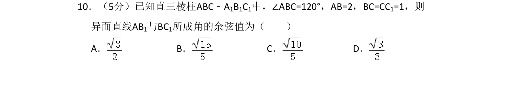
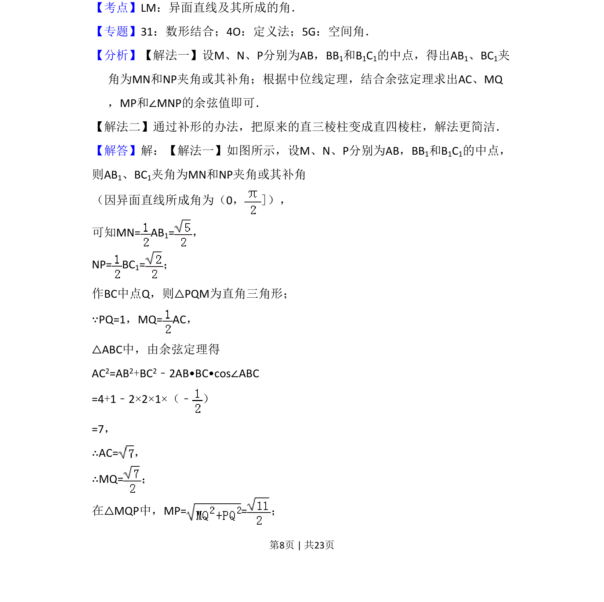
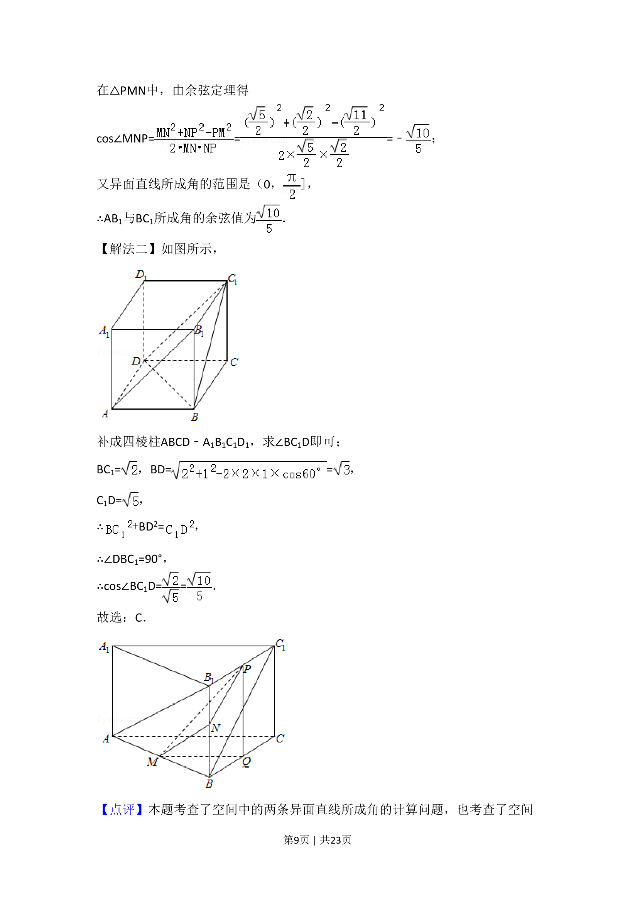

考点：异面直线所成角 余弦定理 空间几何

已知直三棱柱中求异面直线所成角的余弦值，通过几何法或补形法求解。


📄 原 PDF 第 8 页：
素材/真题/吉林/2008-2024·（吉林）数学高考真题/2017年高考数学试卷（理）（新课标Ⅱ）（解析卷）.pdf
10．（5分）已知直三棱柱ABC﹣A1B1C1中，∠ABC=120°，AB=2，BC=CC1=1，则 异面直线AB1与BC1所成角的余弦值为（ ） A．B．C．D．
【考点】LM：异面直线及其所成的角．菁优网版权所有 【专题】31：数形结合；4O：定义法；5G：空间角． 【分析】【解法一】设M、N、P分别为AB，BB1和B1C1的中点，得出AB1、BC1夹 角为MN和NP夹角或其补角；根据中位线定理，结合余弦定理求出AC、MQ ，MP和∠MNP的余弦值即可． 【解法二】通过补形的办法，把原来的直三棱柱变成直四棱柱，解法更简洁． 【解答】解：【解法一】如图所示，设M、N、P分别为AB，BB1和B1C1的中点， 则AB1、BC1夹角为MN和NP夹角或其补角 （因异面直线所成角为（0，]）， 可知MN= AB 1=， NP= BC 1=； 作BC中点Q，则△PQM为直角三角形； ∵PQ=1，MQ= AC， △ABC中，由余弦定理得 AC2=AB2+BC2﹣2AB•BC•cos∠ABC =4+1﹣2×2×1×（﹣ ） =7， ∴AC=， ∴MQ=； 在△MQP中，MP= =；